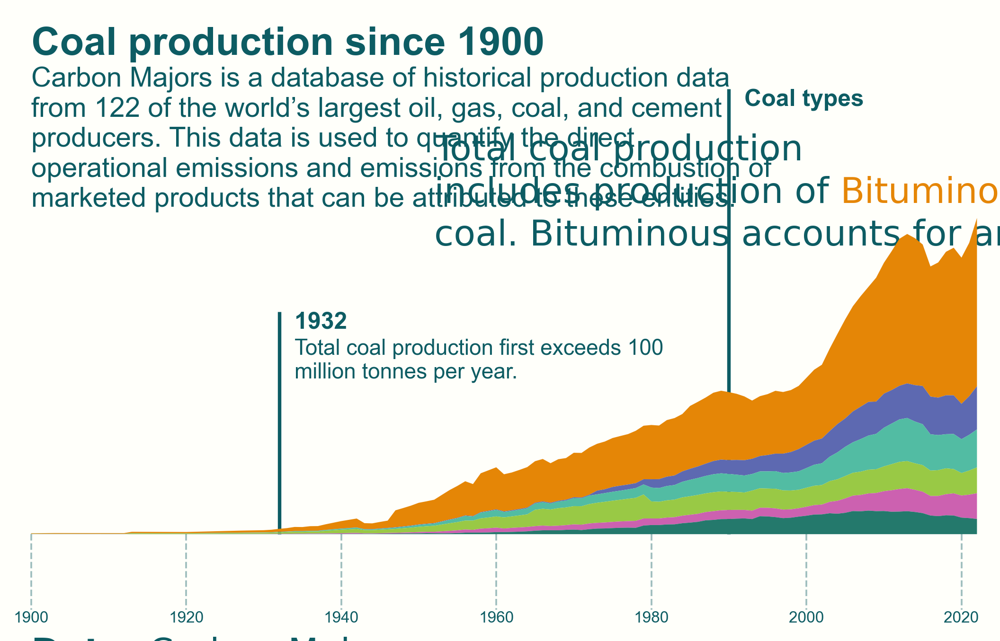
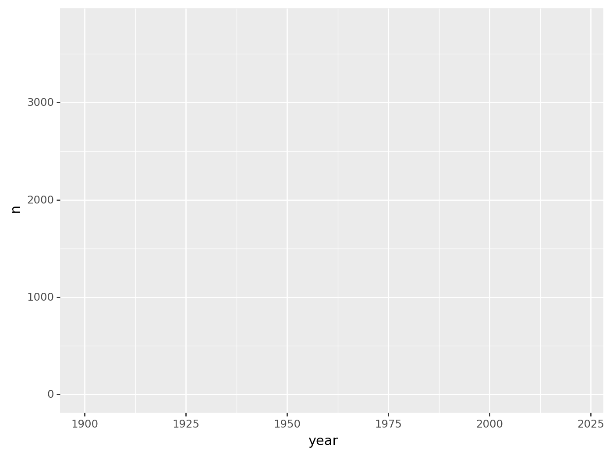
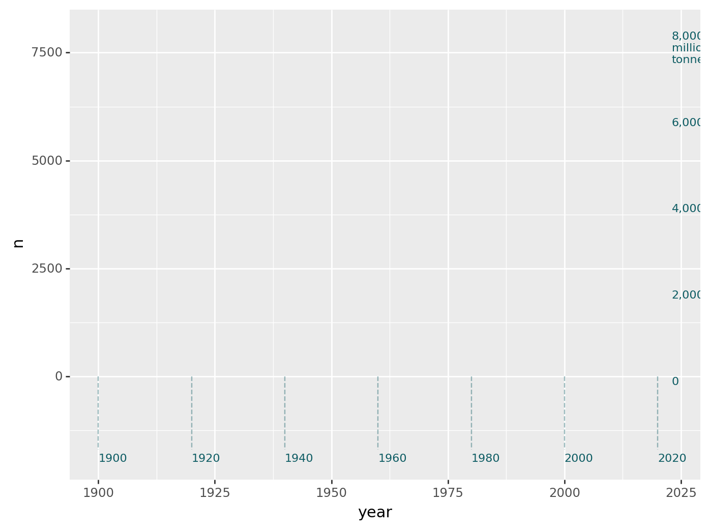
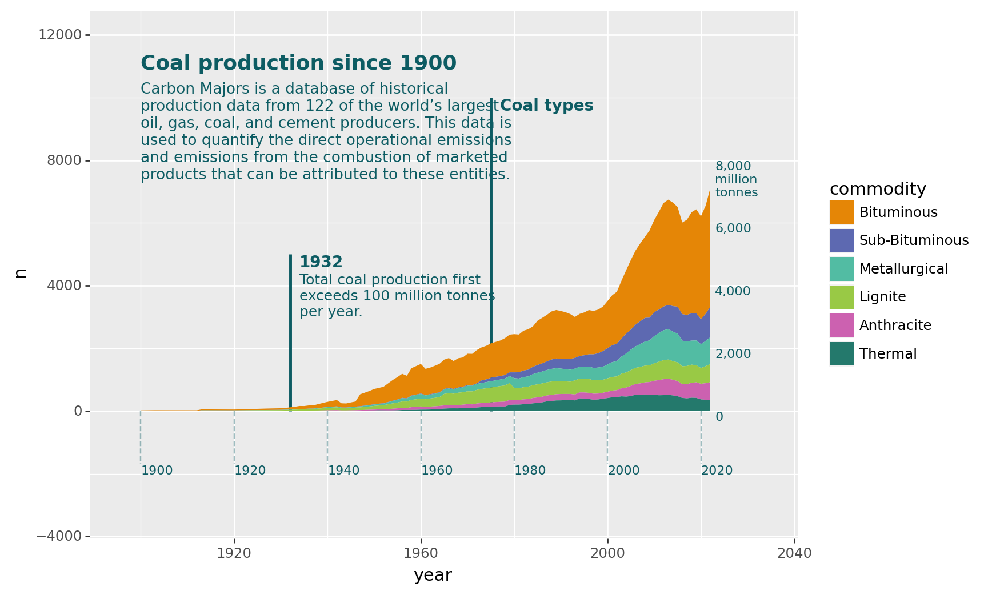
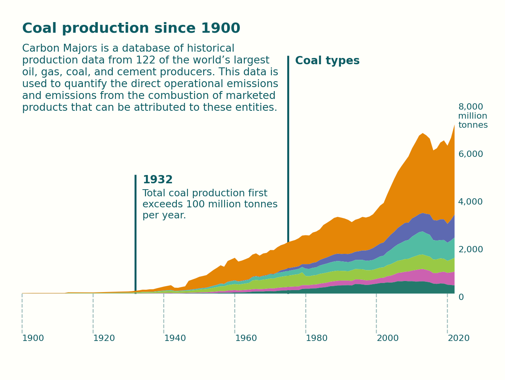
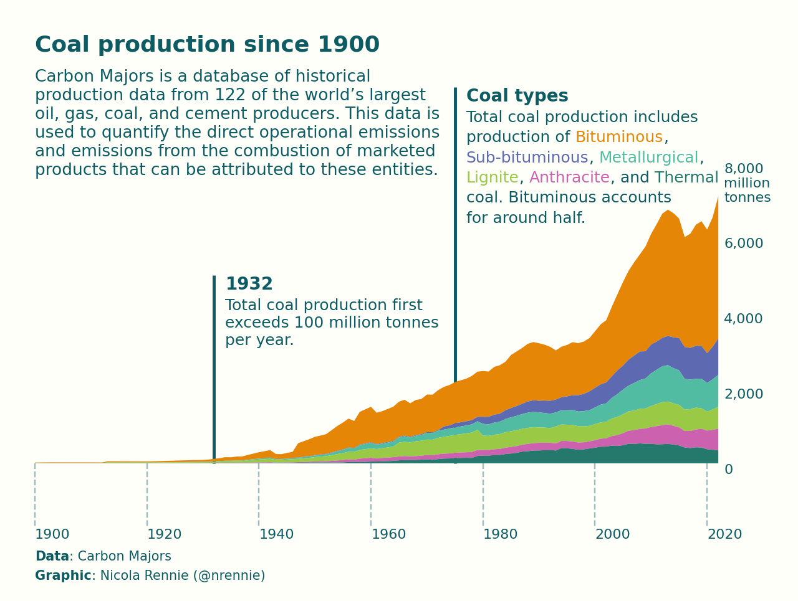

import plotnine as gg
import pandas as pd
import textwrap
import matplotlib.pyplot as plt
import highlight_text as ht
import matplotlib.font_managerAnnotated area charts
A visualisation of coal production data for the 2024 plotnine contest
Plotnine is a visualisation library that brings the Grammar of Graphics to Python, and the 2024 Plotnine Contest aims to bring the community together to create and share with others great plotnine examples! In this tutorial, I’ll be walking you through the process of creating the following plot for my entry into the plotnine contest!

This entry for the plotnine contest was inspired by a visualisation I previously created using {ggplot2} in R for #TidyTuesday. You can see the original R version on GitHub.
Preparing for plotting
Before we dive into plotting, we need to get some data and tidy it up!
Python libraries
Let’s start by loading the Python libraries that we’ll need to create the plot. Beyond plotnine for actually plotting, we also need pandas for data wrangling, textwrap for wrapping long strings of text, matplotlib.pyplot for some additional plot tinkering, highlight_text for adding coloured and bold text to annotations, and matplotlib.font_manager for dealing with fonts.
Reading in data
The data set we’ll be using is the Carbon Majors emissions data. As I mentioned earlier, this dataset was used as a #TidyTuesday dataset. This means we can read the data in directly from the #TidyTuesday GitHub repository:
emissions = pd.read_csv(
'https://raw.githubusercontent.com/rfordatascience/tidytuesday/master/data/2024/2024-05-21/emissions.csv')You can download the emissions.csv file from GitHub if you prefer to load the data from a local file.
Carbon Majors is a database of historical production data from 122 of the world’s largest oil, gas, coal, and cement producers. The dataset has 12,551 rows and 7 columns with the following variables: year, parent_entity, parent_type, commodity, production_value, production_unit, and total_emissions_MtCO2e. The #TidyTuesday README file has more information on what the variables are.
Data wrangling
For this plot, let’s focus on emissions relating to coal only. There are six different types of coal in the data set and we’ll filter the data to keep only rows relating to those six types of coal. We’ll also remove the word "Coal" from each of the category labels since it will be obvious they are types of coal.
# Prep data for plotting
plot_data = emissions[
emissions['commodity'].isin([
'Sub-Bituminous Coal', 'Metallurgical Coal', 'Bituminous Coal',
'Thermal Coal', 'Anthracite Coal', 'Lignite Coal'
])
].copy()
plot_data['commodity'] = plot_data['commodity'].str.replace(' Coal', '')We’ll also focus on production levels, so we’ll keep only the columns we need to plot: year, type of coal (commodity), and amount produced (production_value). The data README tells us that the production_value column is given in million tonnes for coal production.
We need to sum up production across the different entities to get a total production value per year. We’ll also filter the data to consider only the years since 1900:
# Total production per year since 1900
plot_data = plot_data[['year', 'commodity', 'production_value']]
plot_data = plot_data.groupby(['year', 'commodity'], as_index=False).agg(
{'production_value': 'sum'}).rename(columns={'production_value': 'n'})
plot_data = plot_data[plot_data['year'] >= 1900]Let’s also sort the categories based on their production amount in the last year of the data (2022), to make our plot a little bit clearer:
# Sort values by 2022 levels
orders = plot_data[plot_data['year'] == 2022].sort_values(
by='n', ascending=False)['commodity']
plot_data['commodity'] = pd.Categorical(
plot_data['commodity'],
categories=orders,
ordered=True)We’re going to be adding some annotations to the plot, and one of the annotations will show the first year that production exceeded 100 million tonnes per year. Let’s calculate that year (and therefore the position of the annotation) in a data-driven way:
# Values for annotations
exceeds100 = plot_data.groupby('year')['n'].sum()
exceeds100 = exceeds100[exceeds100 > 100].index.min()I often find that traditional grid lines make a plot look a little bit too busy. Instead, we’re going to create our own grid lines by drawing some vertical lines. To do this, let’s create some data with the desired positions of where the vertical lines hit the x-axis:
# Create data for x-axis labels
segment_data = pd.DataFrame({
'year': list(range(1900, 2021, 20))
})We’ll do something similar with the y-axis, by creating custom labels that encompass both the values and the units, instead of having a separate y-axis title. We’ll put these values on the right hand side of the plot (rather than the left as normal) because this is often where people’s eyes end up looking when they’re reading a chart of data over time.
Note the
\ncreates a linebreak in the text.
# y-axis labels
y_axis_data = pd.DataFrame({
'value': [0, 2000, 4000, 6000, 8000],
'label': ['0', '2,000', '4,000', '6,000', '8,000\nmillion\ntonnes']
})Colour, font, and text variables
To make it easier to change up colour schemes, it’s useful to define colours as variables. Here, we define a background colour (bg_col), a text colour (text_col), and a colour palette (col_palette) that will be used to colour the different areas.
# Define background colour, text colour, and colour palette
bg_col = '#FFFFFA'
text_col = '#0D5C63'
col_palette = [
'#E58606',
'#5D69B1',
'#52BCA3',
'#99C945',
'#CC61B0',
'#24796C']Similarly, we can define variable(s) for which font we want to use. But we also need to make sure that the font we want is actually available. We can get a list of available fonts using matplotlib.font_manager.findSystemFonts().
# Available fonts
flist = matplotlib.font_manager.findSystemFonts()If 'Arial' is installed, we’ll use that as the main font (body_font) and if not, we’ll use the default sans serif font.
# Check if 'Arial' in list of installed fonts
flist = ''.join(flist).lower()
if 'arial' in flist:
body_font = 'Arial'
else:
body_font = 'sans'If you’re running this code on your own laptop, feel free to choose a different font!
Let’s also create some variables to store our title and subtitle text. Although these could be passed straight into title and subtitle arguments in the plotting function, keeping them separate leaves the plotting code looking a little bit cleaner. The subtitle text is also quite long, so we’ll use textwrap.wrap() to wrap the text to 50 characters (without breaking words onto multiple lines):
# title, subtitle
title_text = 'Coal production since 1900'
st = 'Carbon Majors is a database of historical production data from 122 of the world’s largest oil, gas, coal, and cement producers. This data is used to quantify the direct operational emissions and emissions from the combustion of marketed products that can be attributed to these entities.'
wrapped_subtitle = '\n'.join(textwrap.wrap(st, width=50))Instead of a traditional legend, we’re going to use coloured text to show which categories the different colours map to. So let’s prepare some text that we’ll use later in functions from the highlight-text library.
We create a string as normal with the text we want to display, then format words within the strings in the following way:
'Normal text then <coloured text::{"color": "red"}>'Instead, of "red" we can use our different hex colours. We also add line breaks using \n. We can add some text formatting to the caption in a similar way. Instead of colouring the text, we’ll make some of it bold. Therefore, we use "fontweight": "bold" instead of "color": "red":
# annotation labels
coal_types_label = 'Total coal production includes\nproduction of <Bituminous::{"color": "#E58606"}>,\n<Sub-bituminous::{"color": "#5D69B1"}>, <Metallurgical::{"color": "#52BCA3"}>,\n<Lignite::{"color": "#99C945"}>, <Anthracite::{"color": "#CC61B0"}>, and <Thermal::{"color": "#24796C"}>\ncoal. Bituminous accounts\nfor around half.'
# caption
cap = '<Data::{"fontweight": "bold"}>: Carbon Majors\n<Graphic::{"fontweight": "bold"}>: Nicola Rennie (@nrennie)'Now we’re ready to plot!
Plotting with plotnine
Plotnine creates plots by adding layers e.g. a layer for the background, a layer for points, a layer for text, and so on. For each layer, we need to tell plotnine which data should be used for the layer, and how the variables in the data map to the different aesthetics in the plot using the aes() function.
We start every plotnine plot using the ggplot() function, and in here we can define the data and the aesthetic mapping globally i.e. for all layers in the plot. Let’s pass in the plot_data and put the year on the x-axis and n on the y-axis.
If you’re a {ggplot2} user, note that the column names needs to passed in quotation marks.
This creates an empty plot, but with the axes limits set according to the year and n columns:
p = (gg.ggplot(plot_data, gg.aes(x='year', y='n')))
We then start adding on more layers, and we can override the global data and aesthetic mappings that we passed into ggplot() for each individual layer. Let’s start by adding our custom gridlines. We already created the data for this in the segment_data DataFrame earlier so we pass this into the data argument of geom_segment(). The geom_segment() function needs four aesthetics: the x- and y- co-ordinates of the start and end points of the lines. Since the lines are vertical, the year will be both the start and end x-coordinates. We want the lines to start below the area chart we’ll be adding so the y-values go between 0 and -1700 (this took a little bit of trial and error!)
Again, although the axis labels are added automatically, we’ll add our own custom text instead. We can add text using the geom_text() function, where the required aesthetics are the x- and y- coordinates of where the text should be as well as the label defining what text should appear. We do this for both the x- and y- axis labels. Further arguments are used to define how the text appears: color defines the colour of the text, size defines the size of the text, family defines the font family to be used, ha='left' left aligns the text horizontally, and va='top' aligns the text vertically with the top of the y- coordinate given.
If you’re used to {ggplot2} in R, note that these alignment arguments are different: for example
hjust = 0is the R equivalent toha='left'. Similarly forvjustandva.
p = (p +
# Axis lines
gg.geom_segment(data=segment_data, mapping=gg.aes(x='year', xend='year', y=0, yend=-1700),
linetype='dashed', alpha=0.4, color=text_col) +
# Axis labels
gg.geom_text(data=segment_data, mapping=gg.aes(x='year', y=-1900, label='year'),
color=text_col, size=8, family=body_font, ha='left') +
gg.geom_text(data=y_axis_data, mapping=gg.aes(x=2023, y='value', label='label'),
color=text_col, size=8, family=body_font, ha='left', va='top'))
We’ll deal with the fact that there are now duplicated grid lines a little bit later. Let’s add some annotations. We’ll add two annotations, with each annotation consisting of three parts: (i) a line indicating a time point, (ii) a title, and (iii) some more information. We can add these using the annotate() function - similar to the geom_() functions we’ve used already but designed to add a small number of plot elements directly instead of from a DataFrame. We need to specify which geometry we want to use, any required aesthetics, and some optional aesthetics.
We could create a DataFrame with this information, and use the
geom_()functions instead, but since it’s only two annotations,annotate()will work just fine.
We add the lines using the 'segment' geometry where we specify the x- and y-coordinates again, as well as the optional size (width of the line) and color (text colour) arguments. We add the text annotations using the 'text' geometry, passing in the x- and y- coordinates and well as the text to appear in the label argument. The fontweight='bold' argument sets the font to bold.
For the second annotation, the larger text will be the coloured text we defined earlier. Unfortunately, this doesn’t (yet) work directly in plotnine so we’ll leave it out for now and add it a little bit later.
p = (p +
# Annotation 1
gg.annotate(
'segment',
x=exceeds100, xend=exceeds100,
y=0, yend=5000,
size=1,
color=text_col
) +
gg.annotate(
'text',
x=exceeds100 + 2, y=5000,
label=exceeds100,
color=text_col,
family=body_font,
ha='left',
va='top',
size=10,
fontweight='bold'
) +
gg.annotate(
'text',
x=exceeds100 + 2, y=5000 - 600,
label='Total coal production first\nexceeds 100 million tonnes\nper year.',
color=text_col,
family=body_font,
ha='left',
size=9,
va='top'
) +
# Annotation 2
gg.annotate(
'segment',
size=1,
x=1975, xend=1975,
y=0, yend=10000,
color=text_col
) +
gg.annotate(
'text',
x=1975 + 2, y=10000,
label='Coal types',
color=text_col,
family=body_font,
ha='left',
va='top',
size=10,
fontweight='bold'
))
Now let’s finally add the area chart! The geom_area() function inherits the data and mapping that we passed into ggplot() earlier, so the only additional mapping we need to specify is the fill option. We want to colour the different areas based on the commodity column. In plotnine, color is typically used for outline colours, and fill is used for inner shape colours. We also pass in the hex colours we defined earlier in col_palette to the scale_fill_manual() function to tell plotnine which colours to use. You’ll notice that a legend is added automatically to the right hand side - we’ll remove this and replace with coloured text a little bit later.
We also use the scale_x_continuous() and scale_y_continuous() functions to set the range of the x- and y- axes, respectively. We add a little bit of padding to each side to leave room for some extra text.
Finally, we also add the title and subtitle. Although the labs() function is typically used to add title and subtitle in plotnine, here I wanted a little bit more control over the positioning of the text (within the plot area) so I’ve used the annotate() function again. Again, the choice of y values for the positioning were a little bit of trial and error.
p = (p +
# Add area plot
gg.geom_area(gg.aes(fill='commodity')) +
# Colour, x-axis, and y-axis scales
gg.scale_fill_manual(values=col_palette) +
gg.scale_x_continuous(limits=(1896, 2034)) +
gg.scale_y_continuous(limits=(-3300, 12000)) +
# Text for title and subtitle
gg.annotate(
'text',
x=1900, y=11400,
label=title_text,
color=text_col,
family=body_font,
ha='left',
va='top',
size=13,
fontweight='bold'
) +
gg.annotate(
'text',
x=1900, y=10500,
label=wrapped_subtitle,
color=text_col,
family=body_font,
size=9.5,
ha='left',
va='top'
))
Let’s add some final styling with plotnine by trimming the white space between the plot and the axis using coord_cartesian(expand=False). In plotnine (and {ggplot2} in R) themes are used to control the styling of all non-data related elements e.g. the background colour, the grid lines, and so on. We add theme_void() to remove all axes, gridlines, and unwanted text. Then we add a little bit more styling using different arguments of theme() to remove the legend and set the background colour to the variable we defined earlier. Note that the background elements use element_rect since the background is essentially just a big rectangle!
p = (p +
# Styling
gg.coord_cartesian(expand=False) +
gg.theme_void(base_size=8) +
gg.theme(
legend_position='none',
plot_background=gg.element_rect(fill=bg_col, color=bg_col),
panel_background=gg.element_rect(fill=bg_col, color=bg_col)
))Here’s what our plot looks like now:

We still need to add the caption, and the coloured text as an alternative to a traditional legend. Unfortunately, there isn’t currently a native way in plotnine to add coloured text through highlight-text. Luckily, plotnine is built on top of matplotlib - and we can exploit that to add the text directly using matplotlib.
Applying text styling with highlight-text
We start by converting from a plotnine plot to a matplotlib plot using the draw() function. We also set the size and resolution (dpi) of the plot. The plt.gca() extracts the axes from the existing plotnine plot.
The ax_text() function from highlight-text adds text at the desired x- and y- coordinates, where the coordinates are based on the data range in the original plot. The vsep argument controls the line spacing, and fontname is used instead of family, but otherwise the arguments work similarly as in plotnine. We use the ax_text() function twice - once to add the coloured annotation, and once to add the caption. Finally, we show the plot.
# Add coloured text with matplotlib and highlight-text
# Convert to matplotlib and set plot options
fig = p.draw()
fig.set_size_inches(8, 6, forward=True)
fig.set_dpi(300)
ax = plt.gca()
# add coloured text to annotation
ht.ax_text(
1977,
9400,
coal_types_label,
vsep=3,
color=text_col,
fontname=body_font,
fontsize=9,
va='top')
# add caption
ht.ax_text(1900, -2300, cap, color=text_col,
fontname=body_font, fontsize=7.5, va='top')
plt.show()
If we want to save our plot to a file, we can use plt.savefig() and specify the resolution and bbox_inches='tight' to avoid any extra whitespace around the edges of the plot.
# Save image
plt.savefig('plot.png', dpi=300, bbox_inches='tight')Check out the plotnine Gallery for more examples of plots created using plotnine!
You can also read this tutorial on my website!